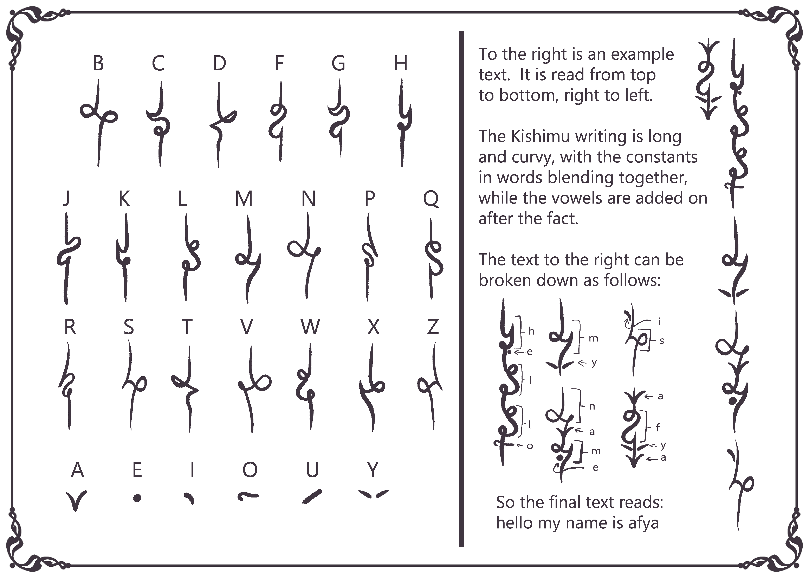

What is this?
This is a project to convert a Latin-script sentence (abcd...) to a Kishimu-script sentence. The
Kishimu-script is an alternative writing system for a fantasy species known as Kishimus and was created
by Paradoxum. Check out more of her work and art here: https://www.instagram.com/paradoxum_art/. The
Kishimu script uses an alphasyllabary (or abugida) system whereas the Latin script uses an alphabet
system. Alphasyllabary is similar to an alphabet, but its vowels are not full standalone symbols.
Instead, the vowels must be appended or attached to a consonant. The Kishimu script has two more main
differences compared to Latin script. The first, words in a sentence are written without break (similar
to cursive). The second, sentences are read from top to bottom and right to left. The script and example
is below:
